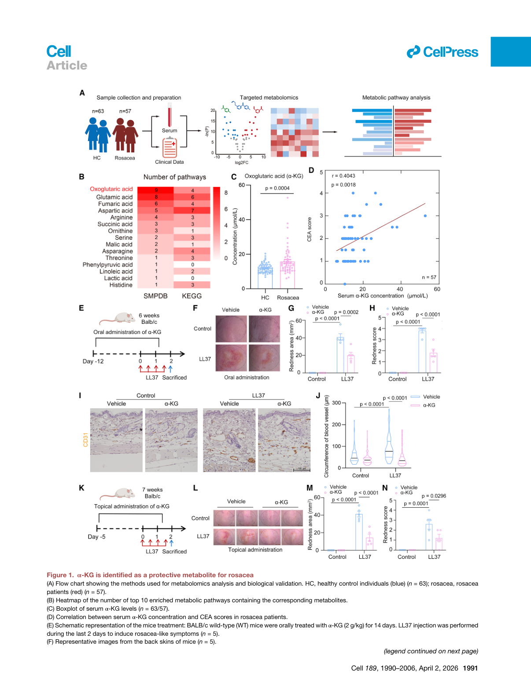
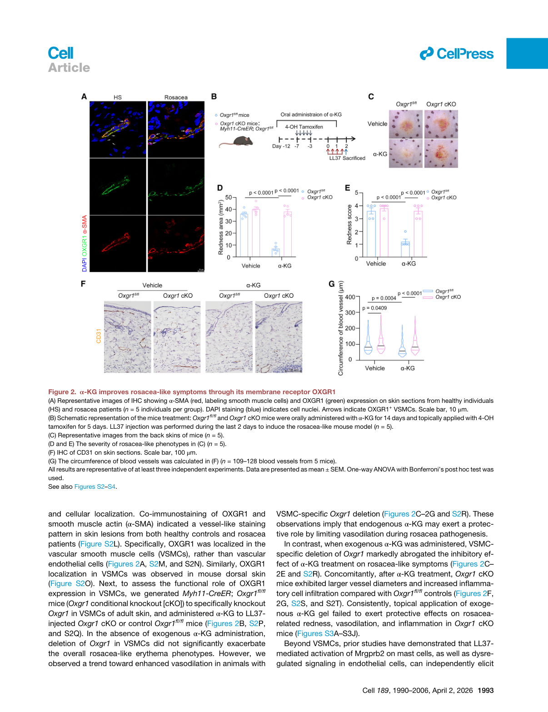
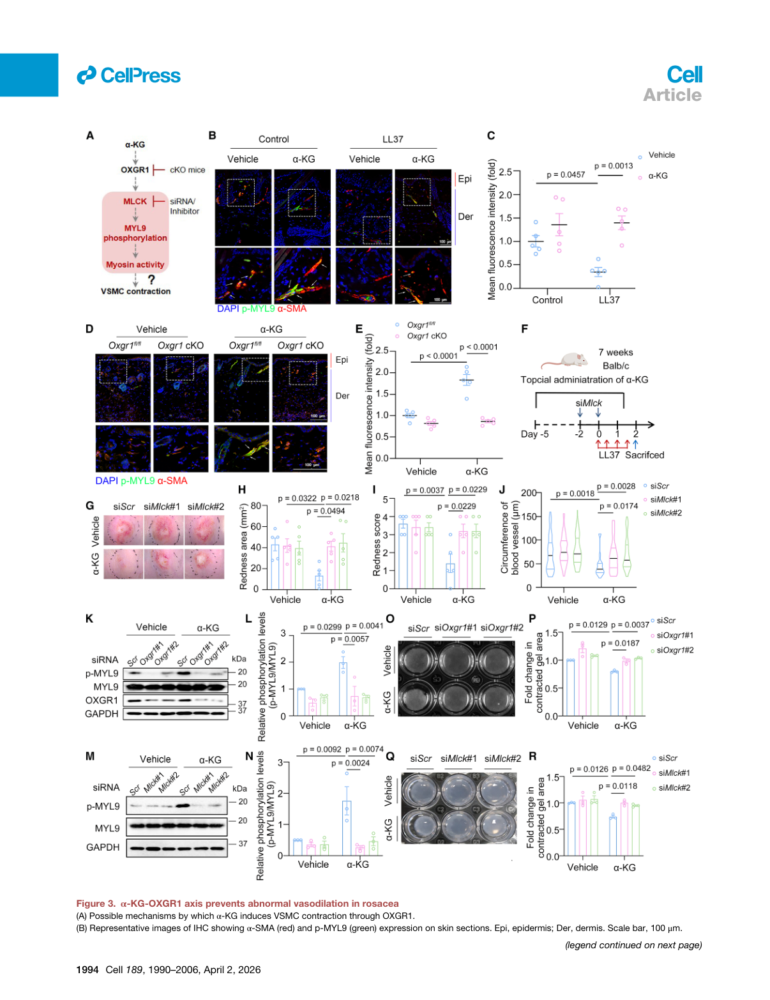
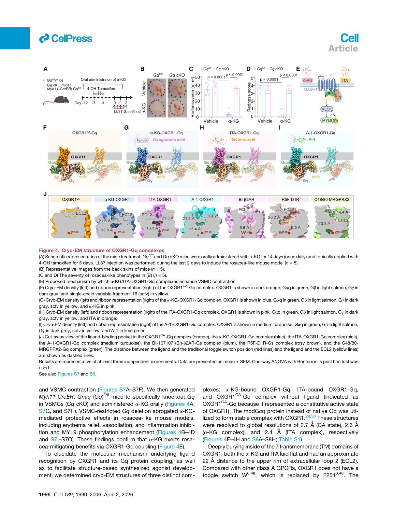
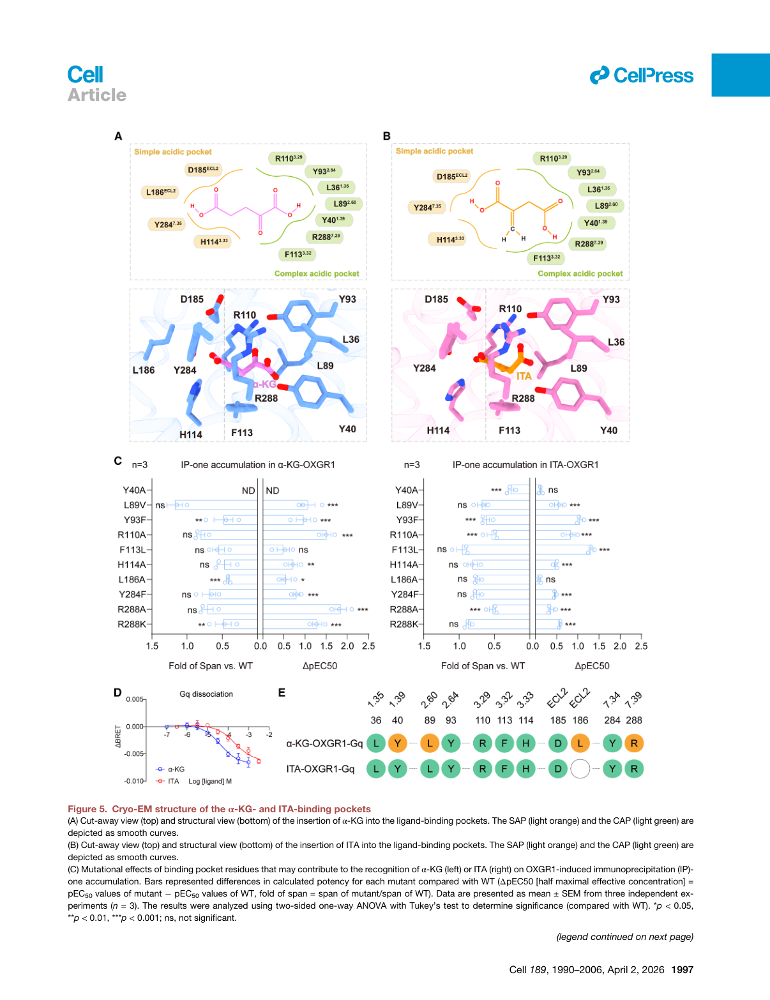
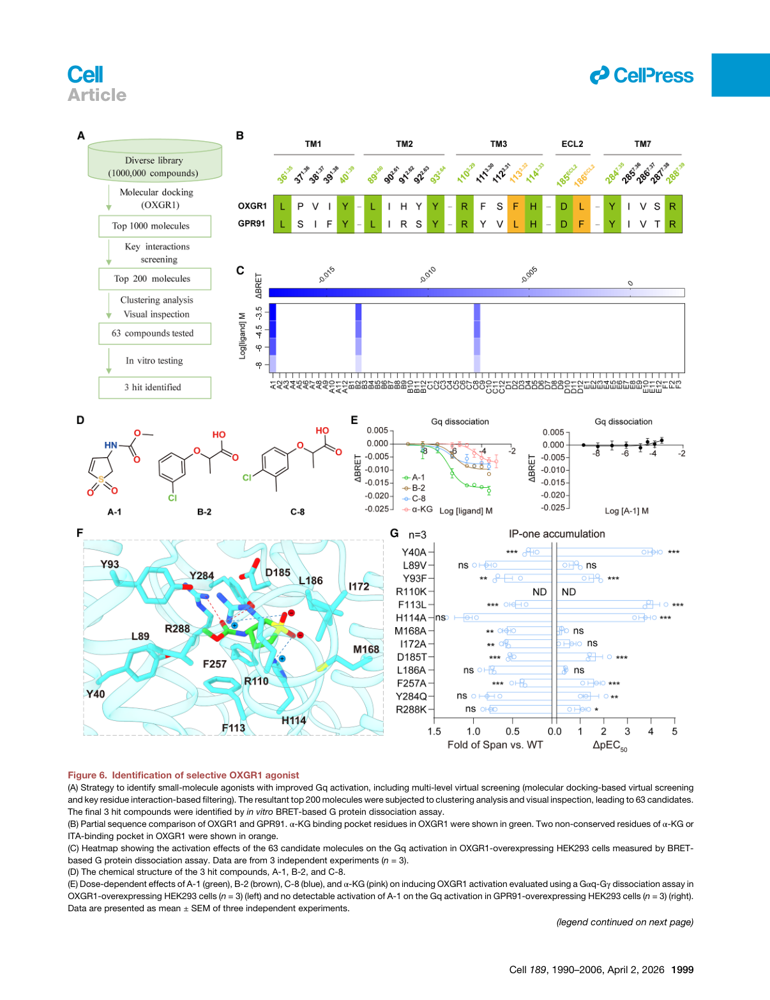
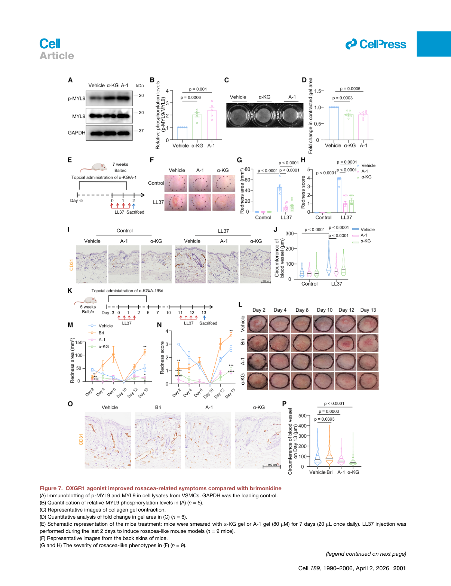

本文献笔记由 Claudian 自动生成，元数据已同步至 Zotero (ItemID: 1872, Key: 9TPCVSE5)
背景与研究意义#
疾病背景#
玫瑰痤疮（酒渣鼻）是一种慢性炎症性皮肤病，全球患病率约 5.5%，主要表现为面部中央潮红、持续性红斑、丘疹、脓疱和鼻赘，严重损害患者身心健康。持续性红斑被广泛认为是玫瑰痤疮的主要特征之一。
目前推荐的治疗方法大多在控制丘疹和脓疱方面显示疗效，但红斑的完全缓解仍然具有挑战性，复发率很高。FDA 批准的全身药物多西环素仅适用于丘疹脓疱型。两种选择性α-肾上腺素受体激动剂——溴莫尼定和羟甲唑啉是 FDA 批准的仅有的局部用红斑治疗药物，但临床经验表明疗效有限，且可能引起停药反弹、红斑加重和接触性皮炎等不良反应。
因此，红斑治疗的持续挑战凸显了开发创新治疗药物的迫切需要。
科学问题#
- 玫瑰痤疮红斑患者的血液代谢谱发生了怎样的改变？哪些关键代谢物参与其发病机制？
- 代谢物如何通过膜受体影响血管功能，其下游信号通路是什么？
- 能否基于结构生物学合理设计高选择性激动剂，实现比现有药物更安全有效的治疗？
研究思路（技术路线）#
[临床样本]
63名健康 vs 57名玫瑰痤疮患者血清代谢组学
↓
代谢组学发现：α-KG ↑ 与红斑严重程度正相关
↓
① 功能验证
LL37诱导玫瑰痤疮样小鼠模型
α-KG全身/局部给药 → 红斑↓ 血管收缩↑
↓
② 机制解析
OXGR1受体定位（VSMC特异性）→ Gq信号 → MLCK/MYL9磷酸化 → VSMC收缩
↓
③ 结构生物学
冷冻电镜解析OXGR1-Gq复合物结构
双酸结合口袋 → 配体识别机制
↓
④ 药物设计
基于结构虚拟筛选 → 合成激动剂A-1
↓
⑤ 疗效比较
A-1 vs α-KG vs 溴莫尼定（头对头）
主要结果#
Result 1 | α-酮戊二酸是玫瑰痤疮的保护性代谢物#
核心发现： 玫瑰痤疮患者血清中 α-酮戊二酸（α-KG）水平显著升高，且与红斑严重程度（CEA评分）呈正相关；外源性 α-KG 全身或局部给药均能以剂量依赖性方式改善 LL37 诱导的小鼠玫瑰痤疮样症状。
主要证据：
- 对 63 名健康志愿者 vs 57 名玫瑰痤疮患者的血清代谢组学分析（SMPDB/KEGG 通路富集），前十个富集通路中有九个与 α-KG 相关
- α-KG 水平与 CEA 评分正相关（R² > 0.5），但与 IGA 评分无关，提示 α-KG 与红斑而非丘疹脓疱更相关
- 连续 14 天 α-KG 口服 + LL37 诱导模型：红斑面积和评分以剂量依赖性方式降低；CD31 免疫组化证实血管收缩效应
- 局部 α-KG 凝胶同样减轻血管扩张和炎症浸润（避免了全身性影响）
意义： 首次鉴定 α-KG 为玫瑰痤疮的保护性代谢物，具有治疗转化潜力。
Result 2 | α-KG 通过血管平滑肌细胞上的 OXGR1 受体发挥作用#
核心发现： OXGR1 特异性定位于血管平滑肌细胞（VSMC），而非内皮细胞；VSMC 特异性敲除 OXGR1 完全消除了 α-KG 对玫瑰痤疮样症状的保护作用。
主要证据：
- OXGR1 与 α-SMA 共免疫染色呈血管样模式，定位于 VSMC（非内皮细胞）
- 构建 Myh11-CreER;Oxgr1^fl/fl VSMC 特异性条件性敲除（cKO）小鼠
- LL37 诱导后，Oxgr1 cKO 小鼠中 α-KG 的红斑减轻作用完全消失（图 2C-2E），血管直径增大，炎症浸润增加
- 另一种 OXGR1 内源性激动剂衣康酸（ITA）同样改善玫瑰痤疮样症状，证实信号通路的特异性
意义： 确立 OXGR1 为 α-KG 改善玫瑰痤疮的必要受体，作用细胞为 VSMC。
Result 3 | α-KG-OXGR1-Gq-MYL9 轴抑制异常血管舒张#
核心发现： α-KG 通过激活 Gq 信号通路，上调 MLCK 表达和 MYL9 磷酸化，促进 VSMC 收缩，从而抑制病理性血管舒张；这是 α-KG 发挥保护作用的核心信号轴。
主要证据：
- 玫瑰痤疮样小鼠和患者皮肤中，VSMC 内 p-MYL9 水平均降低；α-KG 或 ITA 治疗可逆转
- OXGR1 缺失 → p-MYL9 水平显著降低
- siRNA 敲低 Mlck 或 Oxgr1 → α-KG 对 VSMC 收缩的保护作用消失
- Gq 抑制剂 YM-254890 处理 → 抑制 α-KG 诱导的 p-MYL9 上调和 VSMC 收缩
- VSMC 特异性 Gq cKO 小鼠 → α-KG 的保护作用消失
- 胶原凝胶收缩实验证实：α-KG 诱导 VSMC 收缩，Oxgr1/Mlck 敲低或 Gq 抑制阻断该效应
- 机制链：α-KG → OXGR1 → Gq → PLC → IP₃↑ + DAG↑ → [Ca²⁺]ᵢ↑ → Ca²⁺/CaM → MLCK → MYL9磷酸化 → VSMC收缩
意义： 从分子到细胞水平完整阐明了 α-KG-OXGR1 轴的信号传导机制。
Result 4 | OXGR1-Gq 复合物的冷冻电镜结构解析#
核心发现： 解析了 4 种 OXGR1-Gq 复合物结构（分辨率 2.4-2.7 Å），揭示了 OXGR1 识别双酸配体的独特结构基础和非典型 GPCR 激活机制。
主要证据：
- 解析了 4 种复合物：OXGR1^CA^-Gq（组成性激活）、α-KG-OXGR1-Gq（2.6 Å）、ITA-OXGR1-Gq（2.4 Å）、A-1-OXGR1-Gq（2.6 Å）
- α-KG 和 ITA 深埋于 OXGR1 的 7 个跨膜结构域内，配体到 ECL2 上缘距离约 22 Å
- OXGR1 缺乏经典 W^6.48^ 开关（被 F254^6.48^ 取代），提示非典型激活机制
- 与 β2AR（典型 A 类 GPCR，TM6-TM3 距离 15 Å）相比，活性 OXGR1 的 TM6-TM3 距离仅 3 Å
意义： 从原子水平揭示了 OXGR1 的独特结构特征，为基于结构药物设计奠定了基础。
Result 5 | OXGR1 具有独特的双酸结合口袋（bipartite-acid pocket）#
核心发现： OXGR1 的配体结合口袋由两个协同子口袋组成——简单酸性口袋（SAP）和复杂酸性口袋（CAP），分别识别配体的两个羧酸基团，这解释了 OXGR1 对 α-KG 和 ITA（均为双酸分子）的选择性。
主要证据：
- SAP（简单酸性口袋）： 识别配体末端单个羧酸，被 R110³·²⁹、H114³·³³、Y284⁷·³⁵ 包围，提供极性和正电荷环境
- CAP（复杂酸性口袋）： 识别另一个羧酸，被 Y40¹·³⁹、Y93²·⁶⁴、R288⁷·³⁹ 包围
- 关键基序：Y40¹·³⁹ Y93²·⁶⁴ R288⁷·³⁹ 基序编码 CAP；R110³·²⁹ H114³·³³ Y284⁷·³⁵ 基序编码 SAP
- 突变实验：R110A、H114A、Y284F、Y40A、Y93F、R288A 均显著损害配体诱导的 OXGR1 激活
- α-KG 比 ITA 效力强 5 倍以上（EC₅₀：41.0 vs 220.4 μM）：α-KG 与 L186 主链胺基形成额外极性相互作用，L186A 突变对 α-KG 影响更大
意义： 首次阐明双酸代谢物的受体识别模式，为设计双酸类激动剂提供了结构模板。
Result 6 | 基于结构合理设计选择性 OXGR1 激动剂 A-1#
核心发现： 基于 α-KG 结合口袋结构，合理设计并筛选出 A-1——一种高效（EC₅₀ = 626.5 nM，比 α-KG 强约 60 倍）且对同源受体 GPR91 具有高选择性的合成 OXGR1 激动剂。
主要证据：
- 虚拟筛选策略：靶向 OXGR1 相比 GPR91 的两个非保守残基 L186^ECL2^ 和 F113³·³²^
- 从 100 万个化合物库 → 1000 个初筛 → 200 个聚类分析 → 63 个化合物购买 → BRET 功能验证
- 鉴定 3 个先导化合物（A-1、B-2、C-8），A-1 效力最强
- A-1 的 EC₅₀ = 626.5 nM（vs α-KG 39.5 μM，强约 60 倍）；对 GPR91 无明显活性
- 结构基础： A-1 的二氢噻吩部分与 F113 形成关键 π-π 堆积和阳离子-π 相互作用；F113L 突变使 A-1 效力降低 >10,000 倍，证实 F113 是选择性的分子基础
- A-1 不激活 P2X4 嘌呤受体（α-KG 的潜在脱靶受体）
意义： 展示了从结构到药物的完整合理设计流程，A-1 作为临床前候选药物具有极大潜力。
Result 7 | A-1 与溴莫尼定头对头比较：疗效相当，安全性更优#
核心发现： 在 LL37 诱导的玫瑰痤疮样小鼠模型中，A-1 局部给药展现出与溴莫尼定相当的治疗效果，且停药后无反弹现象，长期用药安全性更佳。
主要证据：
- A-1 促进 VSMC 中 MYL9 磷酸化和 MLCK 表达，效果与 α-KG 相当，但有效浓度低 500 倍（200 nM vs 80 μM）
- 局部应用 A-1 显著改善玫瑰痤疮相关红斑、血管扩张和炎症（与 α-KG 效果相当）
- 头对头比较（0.33% 溴莫尼定 vs A-1凝胶）：
- 即时疗效：A-1 与溴莫尼定相当
- 长期用药后：溴莫尼定出现接触性皮炎样特征
- 停药 4 天后再诱导（模拟复发）： A-1 和 α-KG 均保持强效持久治疗效果；溴莫尼定加重红斑（与临床停药反弹现象一致）
意义： A-1 作为新一代 OXGR1 激动剂，有望克服现有红斑治疗药物的瓶颈问题。
关键图表 (Figure 1-7)#
以下为论文原图，按研究逻辑顺序排列。PDF 源文件：
D:/App/Zotero/storage/WKKSZCY2/Xiao 等 - 2026 - Metabolite-gated vascular contractility switch OXGR1 activation mechanism enables agonist therapy for rosacea erythema.pdf
Figure 1 | α-酮戊二酸被确定为玫瑰痤疮的保护性代谢物#

图注： Figure 1. α-KG 被确定为玫瑰痤疮的保护性代谢物
- (A) 研究设计和参与者特征（63名健康 vs 57名玫瑰痤疮患者）
- (B) SMPDB 通路富集分析，显示 α-KG 相关通路显著富集
- (C-D) α-KG 水平与 CEA 评分正相关，与 IGA 无关
- (E-H) α-KG 口服给药减轻 LL37 诱导的玫瑰痤疮样红斑（剂量依赖性）
- (I-J) CD31 免疫组化证实 α-KG 的血管收缩作用
- (K-N) 局部 α-KG 凝胶同样减轻玫瑰痤疮样症状
Figure 2 | α-酮戊二酸通过其膜受体 OXGR1 改善玫瑰痤疮样症状#

图注： Figure 2. α-KG 通过其特异性受体 OXGR1 改善玫瑰痤疮样症状
- (A-M) OXGR1 与 α-SMA 共定位，定位于 VSMC（非内皮细胞）
- (B-P) VSMC 特异性 Oxgr1 条件性敲除（cKO）小鼠构建
- (C-E) Oxgr1 cKO 小鼠中，α-KG 的红斑减轻作用消失
- (F-G) α-KG 治疗后，cKO 小鼠血管直径增大、炎症浸润增加
Figure 3 | α-KG-OXGR1 轴可预防玫瑰痤疮中的异常血管舒张#

图注： Figure 3. α-KG-OXGR1-MYL9 轴可预防玫瑰痤疮中的异常血管舒张
- (A-E) 玫瑰痤疮样小鼠 VSMC 中 p-MYL9 水平降低，α-KG 治疗逆转；OXGR1 缺失抑制 MYL9 磷酸化
- (F-L) siRNA 敲低 Mlck 逆转 α-KG 对红斑和 p-MYL9 的改善作用
- (M-O) ML-7（MLCK 抑制剂）加剧玫瑰痤疮样症状
- (K-R) 原代 VSMC 胶原凝胶收缩实验：α-KG 诱导 VSMC 收缩，Oxgr1/Mlck 敲低阻断该效应
Figure 4 | OXGR1-Gq 复合物的冷冻电镜结构#

图注： Figure 4. OXGR1-Gq 复合物的冷冻电镜结构
- (A-I) 三种复合物的 cryo-EM密度图（OXGR1^CA^-Gq: 2.7 Å；α-KG: 2.6 Å；ITA: 2.4 Å）
- (J) OXGR1 激活机制与其他 GPCR 的比较（缺乏 W^6.48^ 开关）
- (K) 全局分辨率和各亚基分辨率图
Figure 5 | α-KG 和 ITA 结合口袋的冷冻电镜结构#

图注： Figure 5. α-KG 和 ITA 结合口袋的冷冻电镜结构
- (A-B) 双酸结合口袋（SAP + CAP）的结构细节
- (C) 关键残基突变对配体诱导激活的影响
- (D-E) α-KG 比 ITA 效力更强的结构基础（L186^ECL2^ 额外极性相互作用）
Figure 6 | 选择性 OXGR1 激动剂的鉴定#

图注： Figure 6. 基于结构虚拟筛选鉴定选择性 OXGR1 激动剂
- (A-C) 虚拟筛选流程（100万化合物 → 1000 → 200 → 63 → 3个先导化合物）
- (D-E) A-1 的 EC₅₀ = 626.5 nM（比 α-KG 强约 60 倍），对 GPR91 无活性
- (F-N) A-1 与 OXGR1 结合口袋的关键相互作用（F113 的 π-π 堆积是选择性关键）
Figure 7 | OXGR1 激动剂与溴莫尼定头对头比较#

图注： Figure 7. OXGR1 激动剂通过收缩血管平滑肌细胞来缓解酒渣鼻
- (A-D) A-1 促进 VSMC 中 MYL9 磷酸化和 MLCK 表达，效果与 α-KG 相当
- (E-L) A-1 局部应用改善玫瑰痤疮样红斑和血管扩张
- (K-P) 头对头比较：A-1 vs 溴莫尼定疗效相当；复发模型中，溴莫尼定加重红斑（停药反弹），A-1 和 α-KG 保持疗效
讨论与结论#
核心发现#
首次建立代谢物-血管功能障碍-玫瑰痤疮红斑的机制联系： α-KG 通过激活 VSMC 中的 OXGR1-Gq-MYL9 信号轴，增强血管收缩力，抑制病理性血管舒张，从而改善玫瑰痤疮红斑。
揭示了 OXGR1 的独特结构基础： 双酸结合口袋（SAP + CAP）和非典型 GPCR 激活机制（F254^6.48^ 替代 W^6.48^），解释了为何 OXGR1 选择性识别 α-KG 和 ITA 等双酸代谢物。
合理设计的新一代红斑治疗药物 A-1： 基于结构生物学的药物设计，效力比 α-KG 强 60 倍，且避免了溴莫尼定的停药反弹问题。
研究亮点#
- ✅ 临床意义： 将 α-KG-OXGR1 轴确立为玫瑰痤疮红斑的全新治疗靶点，填补了现有疗法的关键空白
- ✅ 机制创新： 首次阐明代谢物通过 GPCR 调节血管平滑肌收缩的具体信号通路（α-KG-OXGR1-Gq-MYL9）
- ✅ 结构突破： 利用 cryo-EM 解析了 OXGR1 的独特双酸结合口袋和非典型激活机制
- ✅ 药物创新： 基于结构合理设计合成激动剂 A-1，展示了从基础研究到药物发现的完整转化链条
- ✅ 临床价值： A-1 在玫瑰痤疮样模型中疗效与溴莫尼定相当，但避免了停药反弹，有望成为更安全的替代药物
研究局限性#
模型局限： LL37 诱导的小鼠玫瑰痤疮样模型无法完全模拟人类玫瑰痤疮的慢性复发病程和表型异质性
临床转化： α-KG 和 A-1 在小鼠模型中显示出显著疗效，但仍需临床试验验证其在患者中的治疗效果和长期安全性
上游机制： 患者体内 α-KG 水平升高的上游驱动因素和组织来源尚未明确，有待进一步研究
其他效应： α-KG 作为三羧酸循环中间体和表观遗传调节因子，在玫瑰痤疮中可能存在其他非 OXGR1 依赖的机制
核心参考文献#
Xiao WQ et al. (2026). Metabolite-gated vascular contractility switch: OXGR1 activation mechanism enables agonist therapy for rosacea erythema. Cell, 189, 1990-2006.e30. DOI: 10.1016/j.cell.2026.01.036
Liu T et al. (2022). Aberrant amino acid metabolism promotes neurovascular reactivity in rosacea. JCI Insight, 7, e161870. （玫瑰痤疮代谢组学数据集来源）
Tokonami N et al. (2013). α-Ketoglutarate regulates acid-base balance through an intrarenal paracrine mechanism. J. Clin. Investig., 123, 3166-3171. （α-KG-OXGR1 在肾脏中的经典功能）
Zeng YR et al. (2023). The immunometabolite itaconate stimulates OXGR1 to promote mucociliary clearance during the pulmonary innate immune response. J. Clin. Investig., 133, e160463. （ITA 作为 OXGR1 激动剂的免疫功能）
Yang J et al. (2022). AKG/OXGR1 promotes skeletal muscle blood flow and metabolism by relaxing vascular smooth muscle. Life Metab., 1, 285-297. （α-KG/OXGR1 对血管平滑肌的双向调节）
Olsen RHJ et al. (2020). TRUPATH, an open-source biosensor platform for interrogating the GPCR transducerome. Nat. Chem. Biol., 16, 841-849. （G 蛋白解离实验方法）
Thiboutot D et al. (2020). Standard management options for rosacea: The 2019 update by the National Rosacea Society Expert Committee. J. Am. Acad. Dermatol., 82, 1501-1510. （玫瑰痤疮治疗指南）
Asadi Shahmirzadi A et al. (2020). Alpha-Ketoglutarate, an Endogenous Metabolite, Extends Lifespan and Compresses Morbidity in Aging Mice. Cell Metab., 32, 447-456.e6. （α-KG 的系统生物学效应）
精彩片段（Highlights）#
- α-酮戊二酸（α-KG）是玫瑰痤疮患者体内升高的保护性代谢物，其水平与红斑严重程度相关
- OXGR1 通过 Gq-MYL9 信号通路成为治疗玫瑰痤疮红斑的全新靶点
- 冷冻电镜揭示了 OXGR1 的双酸结合口袋识别其内源性激动剂（α-KG 和 ITA）的分子机制
- α-酮戊二酸和结构导向激动剂 A-1 可改善玫瑰痤疮，疗效与溴莫尼定类似，且无停药反弹
文献汇报生成时间：2026-04-10 | Zotero ItemID: 1872